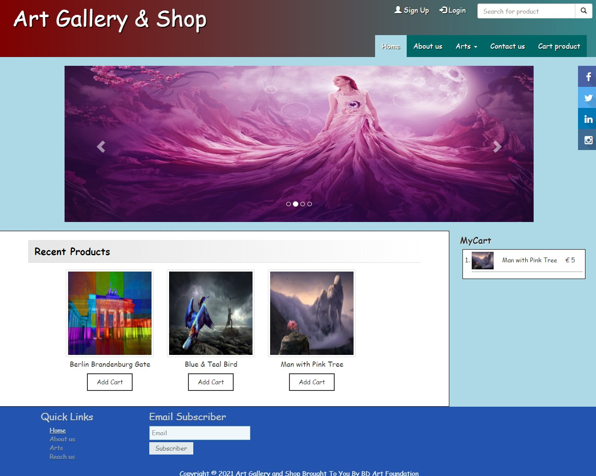

About Me
I have a Bachelor's Degree in Fashion Design and Technology and a Passion for Digital Media, Including Graphic Design, Human-Computer Interaction, Data Science, and Web Development.
Skills
- Graphic Design (Adobe Photoshop, Illustrator, CLO3D, Gerber)
- Web Development (HTML, CSS, JavaScript)
- Human-Computer Interaction
- Data Science basics (Python, Data Visualization)
- Technical Tools: Microsoft Word, PowerPoint
- Languages: German (A2), English (B1), Bengali (Native)
- Soft Skills: Customer Focus, Attention to Detail, Effective Communication
Education
BA in Fashion Design and Technology
Shanto-Mariam University of Creative Technology, Bangladesh
Feb 2019 – Sep 2023
GPA: 3.55/4.0
Relevant Coursework includes Computer Aided Design (CAD), Computer Application in Art & Design, Digital Fashion Illustration, Knitwear Design & Technology, Apparel Manufacturing Technology, Textile Science & Technology, Fashion Photography, Pattern Cutting & Design.
Experience
Masco Group Limited, Bangladesh — Internship
May 2023 – July 2023
- Assisted in merchandising tasks: fabric sourcing, sampling, costing, and production follow-up.
- Coordinated with design, production, and quality teams to meet buyer requirements and deadlines.
- Prepared cost sheets, proforma invoices, and managed export documents like letters of credit.
- Identified and helped resolve supply chain and quality challenges in knit garment manufacturing.
Hanger, Bangladesh — Fashion Designer
Feb 2020 – Apr 2020
- Created original children’s clothing designs and developed samples based on client requirements.
- Collaborated with production team to ensure accurate implementation of design specifications.
Projects
- Personal Portfolio Website (This Site)
- Interactive Moodboard (Drag and Drop Images)
- Color Palette Generator
- Personal Finance Tracker
- Sentiment Word Cloud Generator
- Online Art Gallery & Shop
- Price Prediction System
Interactive Moodboard
Languages Used: HTML5, CSS3, JavaScript (ES6)
Tools / Libraries: None (vanilla JS), Google Fonts (Poppins)
Project Description: An interactive web-based moodboard that lets users drag and rearrange images dynamically. It demonstrates front-end skills and UI/UX design principles.
Source Code: GitHub Repository
Color Palette Generator
Languages Used: HTML5, CSS3, JavaScript (ES6)
Tools / Libraries: Vanilla JavaScript, Google Fonts (Poppins)
Project Description: A web app to generate harmonious color palettes with HEX codes that users can copy. It features smooth animations and responsive design.
Source Code: GitHub Repository
Personal Finance Tracker
Languages Used: HTML5, CSS3, JavaScript (ES6)
Tools / Libraries: Vanilla JavaScript, LocalStorage
Project Description: A web application to help users track their expenses, set budgets, and get a clear visualization of their spending habits. The app includes data storage using LocalStorage for persistent tracking.
Source Code: GitHub Repository
Sentiment Word Cloud Generator
Languages Used: HTML5, CSS3, JavaScript (ES6)
Tools / Libraries: Sentiment.js, WordCloud.js
Project Description: A web app that analyzes the sentiment of user input and generates a dynamic word cloud. Words are sized based on their sentiment (positive or negative).
Source Code: GitHub Repository
Online Art Gallery & Shop
Languages Used: HTML, CSS, JavaScript, PHP, MySQL
Project Description: A web application that allows artists to upload their artworks for display and sale online. Visitors can browse, comment on pieces, and registered users can purchase artwork with order tracking and delivery status features.
Source Code: Check Here
Price Prediction System
Languages Used: Python, Flask, JavaScript
Project Description: A machine learning-based web app that predicts prices based on user inputs and historical data. It features an interactive interface and real-time prediction results.

Source Code: Check Here
Contact
Email: taslima.happy52@gmail.com
GitHub: github/Taslima-Happy
LinkedIn: linkedin/taslima-akter
Mobile: +4917640560690
Address: Am Rüten 34A, 28357 Bremen